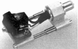

CLEARAUDIO（クリアーオーディオ）
【注意事項】
アクリルのターンテーブルのアナログディスクプレーヤーなどで知られるドイツのブランド。日本では1988年にカートリッジが紹介された。当時の代理店は�潟mア。なお現在もカートリッジを含めアナログ関連製品を手がけており、代理店はハインツ＆カンパニー（サイト公開時、現在はヨシノトレーディング？）である。
�T.カートリッジ

Gamma Ceramic Accurate
サイトマップへ